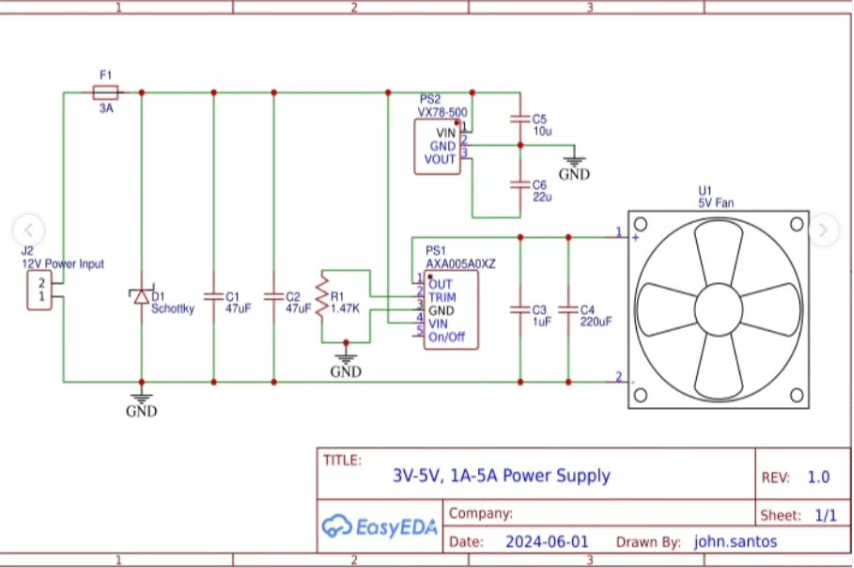

About the Project
This power supply can convert 12V input to 5V, 5A and 3.3V, 1A output. The purpose of this power supply is to meet the requirements of University of Calgary 2024, Capstone Design - AisleDriver project. The power supply takes input power from a 12V 17.2AH battery.
The components used for this power supply are as follows:
- Omnion Power / AXA005A0XZ DC DC converter 0.8-5.5V 27W
- KYOCERA AVX / TAP476M025CCS 47uF tantalum capacitors x2
- KYOCERA AVX / TAP227K016CCS 220uF tantalum capacitors x1
- KYOCERA AVX / SR305C105KAA 1uF ceramic capacitor x1
- Littlefuse Inc. / 0235003.HXP 3A Glass Fuse 5x20mm
- Keystone Electronics / 4628 Fuse Holder Cartridge
- SMC Diode Solutions (VA) / 95SQ015 Schottky Diode 15V 9A
- CUI Inc. / VX7803-500 DC DC converter 3.3V 0.5A 1.65W
- Kemet / ESK106M035AC3AA 10uF aluminum capacitor x1
- Cornell Dubilier / Illinois Capacitor / 226CKR050M 22uF aluminum capacitor x1
